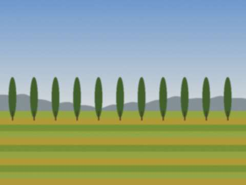
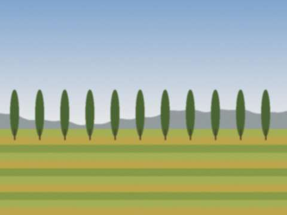

Сен242011
24 сентября 2011 в 17:10, Андрей Вальтер
В 9-м классе, в сентябре 1972 года, нас на месяц отправили «на хлопок». Звучит смешно: школьники в Кобозеве, которые никогда не видели хлопка. Но у нас был колхоз за городом, по Чуйской долине, и школу мобилизовали. Мы жили в бараках, спали на матрасах, вставали в шесть. Собирали вручную, сумки через плечо, килограммы в день записывались на доске.
Мы с Тимуром Исмаиловым и Володей Майером собирали вместе, и у нас было соревнование. Я проиграл, потому что отвлекался на радио, которое слышал вдалеке (кто-то в бараке слушал «Маяк»). Володя набрал больше всех, получил почётную грамоту, которую потерял. Тимур заболел, и мы таскали его в медпункт, смеясь.

Хлопковое поле, сентябрь 1972. Девочки в платках, мальчики в кепках.Вечером пели у костра. Зоя Павловна (та самая, химия) играла на гитаре. Я не знал, что она так играет. Один раз, когда она запела «Милая моя, солнышко лесное», все замолчали. Хлопок я с тех пор не люблю, а гитару очень.
Рубрика: Школа | 2 комментария »
Май12011
1 мая 2011 в 12:00, Андрей Вальтер
Письмо от Кости Калинина (он разрешил опубликовать). Привожу почти целиком, чтобы ничего не потерять.
Андрей, пишу как обещал. Когда клуб закрыли в 90-х, мы остались в доме втроём: я, Федя и сторож. Рядом, у ворот, по воскресеньям собирались любители менять детали. Сначала пять человек, потом двадцать, потом приехали из Алма-Аты и Ташкента. Ты же помнишь, у ворот это начиналось и в 1990 году. Теперь это целый рынок, с рядами и палатками. Называется Радиобазар. Продают приёмники, телефоны, компьютеры, всё. Я в этом году выбран председателем. Мачта стоит. Я её каждую весну красю. Антенну не вешаю, но мачту красю. Приезжай.
Письмо хранится у меня в папке «Кобозев». Отвечу, как только соберусь. Костя, письмо получил, читаю по вечерам. Жду обещанную экскурсию по рядам.
Рубрика: Радиоклуб | 1 комментарий »
Дек282010
28 декабря 2010 в 19:30, Андрей Вальтер
Тридцать первого декабря в цехе работали до обеда, а потом накрывали столы прямо между станками. Простыня на верстак, бутерброды, салаты, два ведра винегрета, мандарины. Начальник цеха Степан Ильич Бондарь поднимал стакан и говорил то же самое каждый год: «План выполнен. Остальное - мелочи». Ему отвечали «Ура!»
Играл магнитофон «Весна». Танцевали, и в шапках, и в рабочих куртках, потому что цех не топили. В девять разъезжались по домам, потому что дома ждали семьи. Домой я приходил с красными щеками и запахом стали на пальцах, и Лена говорила: «Опять ты в этом цехе».
Стенгазета «Качалка» выходила к Новому году особым выпуском. Я рисовал заголовок: качалка в шапке Деда Мороза. Один раз в газете ошибся и написал «Новый год - 1894». Висело три дня, потом заметили. Степан Ильич ничего не сказал, только вздохнул.
Рубрика: Завод | 1 комментарий »
Окт312010
31 октября 2010 в 18:50, Андрей Вальтер
В субботу был осенний сбор нашего общества «Земляки» в Ларе: 43 человека, из них 11 новых. Зал в церковном доме, длинные столы, пироги, чай из самовара (электрического, но самовар). Хор спел «Катюшу» и «Подмосковные вечера» и, по просьбе стариков, «Ой, цветёт калина». Мужчины, которые не поют, делали вид, что ищут носовые платки.
Говорили о Кобозеве. Каждый приходит со своим городом. У кого-то это школа и мороженое, у кого-то лагерь и «Артек», у кого-то - тот август, о котором не хочется. Старая Эмма Рейх (да, наша Эмма Андреевна с немецкого, ей 84!) рассказывала, как она вела уроки в 1960-е и как мы ей отвечали. Я выпил чаю и спрятался за колонной.
Рассказать о городе попросили меня. Я показал фотографии с проектора. После лекции ко мне подошёл мужчина лет шестидесяти и сказал: «Это моя улица». Улица была Заводская, а голубятню за котельной он помнил так же хорошо, как я. Мы выпили чаю за голубей.
Рубрика: Германия | 1 комментарий »
Апр182010
18 апреля 2010 в 20:30, Андрей Вальтер
Что такое «охота на лис»? Это спортивная радиопеленгация. В лесу или в степи прячут несколько маленьких передатчиков («лис»), а вы с приёмником и компасом должны найти их все за час. Выигрывает тот, кто раньше. Ходишь с рамочной антенной, как с зонтиком, по сорок километров за сезон.
В Кобозеве мы ездили в степь за городом, на автобусе радиоклуба. Утром собирались у ворот, Аркадий Михайлович проверял, у всех ли приёмники и компасы. Он говорил: «Лиса не любит шума. Хотите её найти, идите тихо и слушайте». В мае 1972-го я нашёл все три лисы за 47 минут и стал вторым в республике среди юношей. Первым был парень из Таласа, имени не помню. Получил грамоту и значок, значок сохранился.
Холодная степь, ветер, жаворонки. Пот в рубашке. Звук из наушников: пик-пик-пик, чем ближе, тем громче. Нашёл, выскочил из травы, схватил передатчик, как зайца. Лучшее чувство в жизни, после рождения детей.

Степь за Кобозевом, май, как в 1972. Такая же трава.Fuchsjagd ist eine Sportart, die in Deutschland fast niemand kennt. Hier sagt man "Amateurfunkpeilen".
Рубрика: Радиоклуб | 2 комментария »